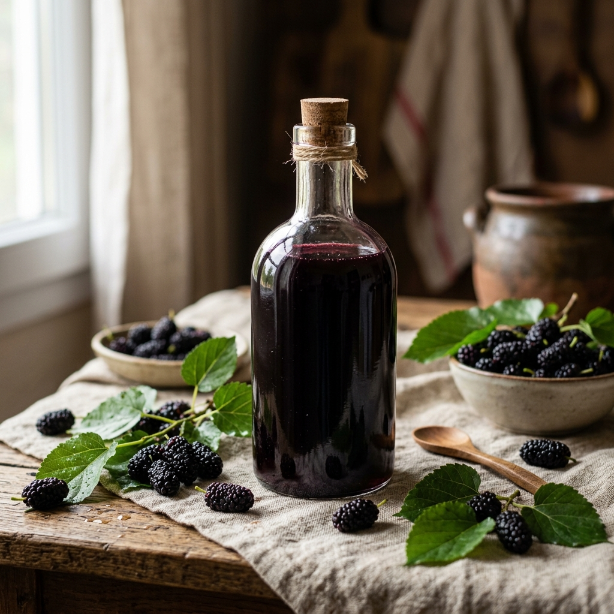
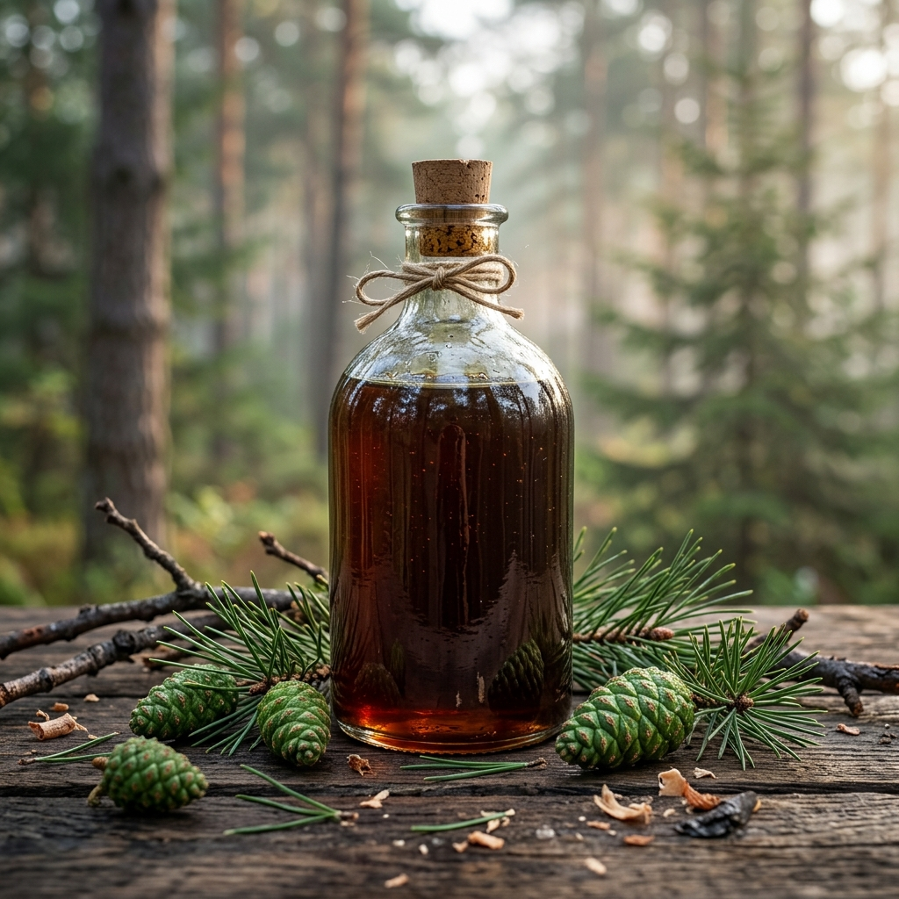

Naturbelassene Sirupe von Anadoa: Tradition trifft moderne Reinheit
Unsere Auswahl an hochwertigen Sirupen bietet Ihnen die reine Essenz der Natur, direkt zu Ihnen nach Hause geliefert. Ob der intensiv-aromatische Tannenzapfen Sirup (Kozalak Şurubu), der fruchtige Schwarze Maulbeere Mix oder unser spezialisierter Kinder Sirup Mix – jedes Produkt wird mit höchster Sorgfalt und Verantwortung für Ihre Gesundheit entwickelt. Wir setzen auf transparente Rezepturen und verzichten konsequent auf künstliche Farbstoffe, Aromen oder Konservierungsmittel.
Das Anadoa Qualitätsversprechen: Schonende Herstellung im Vakuum
Was die Sirupe von Anadoa Naturhaus so besonders macht, ist unser spezielles Herstellungsverfahren. Um die wertvollen Inhaltsstoffe unserer pflanzlichen Zutaten wie Propolis, Honig, Ingwer und Kurkuma zu schützen, nutzen wir moderne Vakuumkessel. Durch das Einkochen bei niedrigen Temperaturen bleiben sensible Vitamine und Enzyme optimal erhalten. Das Ergebnis ist ein hochkonzentrierter, nährstoffreicher Sirup ohne Zusatz von raffiniertem Zucker oder Glukose.
Natürlicher Immun-Support für die ganze Familie
-
Für Kinder:
Unser Kinder Sirup Mix überzeugt durch eine milde, goldene Süße und eine hohe Akzeptanz dank feinem Orangenöl.
-
Für die Küche:
Nutzen Sie unseren 100% reinen Granatapfelsirup (Nar Ekşisi) als kulinarischen Schlüssel für Salate, Marinaden und kreative Dressings.
-
Rein Pflanzlich:
Entdecken Sie die waldige Kraft der Zypressenzapfen in unserem traditionell hergestellten Tannenzapfen Sirup.
Wählen Sie Anadoa für ein Stück unverfälschte Natur und unterstützen Sie Ihr Wohlbefinden mit der Kraft bewährter Wirkstoffe wie Vitamin C und wertvollen Pflanzenextrakten.
Unsere Sirupe

Tannenzapfen Sirup
Extra voller Geschmack – 100 % Rein

Granatapfelsirup | Nar Ekşisi
Ihr kulinarischer Schlüssel zu einem bereicherten Leben

Schwarzer Maulbeer-Sirup
Das fruchtig-intensive Kraftpaket aus der Türkei

Maulbeere Sirup Mix für Kinder
Lebensmittelzubereitung mit Honig, Propolis & Pflanzenextrakten

Anadoa Kinder Sirup Mix
Milde Süße, starke Natur – speziell für Kinder
Häufig gestellte Fragen (FAQ)
Warum Vakuumverfahren?
Bei Anadoa Naturhaus werden unsere Sirupe in speziellen Vakuumkesseln bei niedrigen Temperaturen eingekocht. Dies bewahrt hitzeempfindliche Vitamine und Enzyme bestmöglich.
Enthalten die Sirupe Zucker?
Nein, unsere Sirupe setzen auf 100% Natur pur. Wir verzichten konsequent auf raffinierten Zucker, Glukosesirup und künstliche Konservierungsstoffe.
Sind sie für Kinder geeignet?
Ja, wir haben spezielle Rezepturen wie den Anadoa Kinder Sirup Mix entwickelt, die fein auf die Bedürfnisse von Kindern abgestimmt sind, mit mildem Honig und Vitamin C.
Wie wende ich die Sirupe an?
Vor jedem Gebrauch gut schütteln. Der Sirup kann pur eingenommen oder als natürliche Süße in Joghurt, Müsli oder lauwarme Getränke eingerührt werden.
Wie lange sind sie haltbar?
Lagern Sie die Flasche an einem kühlen, trockenen Ort. Nach dem Öffnen sollte die Flasche stets gut verschlossen bleiben und im Kühlschrank aufbewahrt werden.